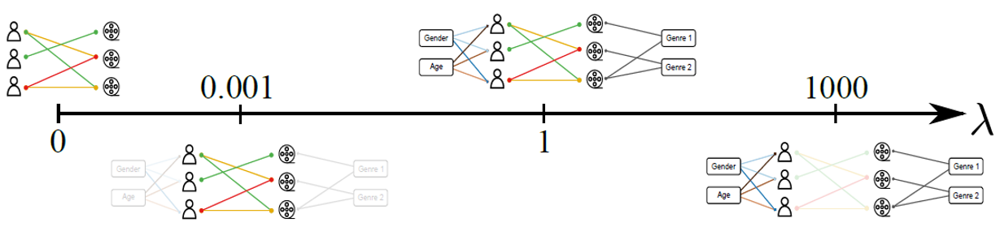

BiMMSBM


A Python library for implementing Mixed-Membership Stochastic Block Models (MMSBM) with metadata integration for bipartite network analysis and link prediction.
Overview
This library provides tools for finding membership factors and connection probabilities in bipartite networks by incorporating node metadata. It implements the Mixed-Membership Stochastic Block Model (MMSBM) to find the most plausible parameters that fit a dataset of links between nodes, with the ability to leverage user metadata for improved link prediction.
Features
Bipartite network analysis with metadata integration
Bayesian inference using Expectation Maximization (EM) algorithm
Adaptive metadata importance through hyperparameters
High-performance implementation with optional Numba acceleration
Installation of requirements
pip install -r requirements.txt
Requirements
Python >= 3.5
Required packages: - pandas - numpy
Optional but recommended: - numba (for performance optimization)
Usage
The library can be used for link prediction in bipartite complex networks where you have: - Two types of nodes (e.g., users and items, politicians and bills …) - Labeled links representing ratings, votes, preferences, or connections - Optional node metadata/attributes
Basic Example
import pandas as pd
import BiMMSBM as sbm
# Create a sample dataset
df_politicians = pd.DataFrame({
"legislator": ["Pedro", "Santiago", "Alberto", "Yolanda"],
"Party": ["PSOE", "VOX", "PP", "Sumar"],
"Movies_preferences": ["Action|Drama", "Belic", "Belic|Comedy", "Comedy|Drama"]
})
# Initialize nodes layer with 9 groups
politicians = sbm.nodes_layer(9, "legislator", df_politicians)
# Add exclusive metadata (Party)
lambda_party = 100
parties = politicians.add_exclusive_metadata(lambda_party, "Party")
# Add inclusive metadata (Movie preferences)
lambda_movies = 0.3
Tau_movies = 6
movies = politicians.add_inclusive_metadata(lambda_movies, "Movies_preferences", Tau_movies)
#Dataframe of bills
df_bills = pd.DataFrame( {"bill":["A", "B", "C","D"],
"Year":[2020, 2020, 2021, 2022]})
#Number of groups
K = 2
#Creating the bills layer
bills = sbm.nodes_layer(K,"bill",df_bills)
#Dataframe of votes
df_votes = pd.DataFrame( {"legislator":["Pedro","Pedro","Pedro","Santiago","Santiago","Santiago",
"Alberto", "Alberto", "Alberto", "Yolanda", "Yolanda", "Yolanda"],
"bill":["A", "B", "D", "A","C", "D",
"A", "B", "C", "B","C", "D",],
"votes":["Yes","No","No", "No","Yes","Yes",
"No","No","Yes", "Yes","No","No"]})
#Creating the BiNet object
votes = sbm.BiNet(df_votes,"votes",nodes_a=bills,nodes_b=politicians)
#Fitting the model
## Initialize the EM algorithm by generating the parameters
votes.init_EM()
## Running the EM algorithm for 100 iterations and check the convergence every 10 steps
for i in range(100):
votes.EM_step()
if i % 10 == 0:
converges = votes.converges()
print(f"Iteration {i} - Convergence: {converges}")
if converges:
break
#Getting the accuracy
print(f"Accuracy: {votes.get_accuracy()}")
How It Works
The Link Prediction Problem
The library solves the link prediction problem in bipartite complex networks using the Mixed-Membership Stochastic Block Model. This model assumes that:
Nodes belong to a superposition of groups
Connection probabilities depend on the groups to which nodes belong
{kind=link}
Metadata Integration
The model can be extended to handle multipartite complex networks by incorporating metadata bipartite networks. Each metadata network is described using a MMSBM, allowing for:
Full metadata correlation
Partial metadata correlation
No metadata correlation
{kind=link}
The importance of each metadata type is controlled by a hyperparameter.
{kind=link}
Documentation and Examples
Download it in the repository
Tutorial: See Tutorial.ipynb
References
License
This project is licensed under the GNU General Public License v3.0 - see the LICENSE file for details.
The GNU GPL is a free, copyleft license that ensures the software remains free and open source. It requires that any derivative works must also be distributed under the same license terms.